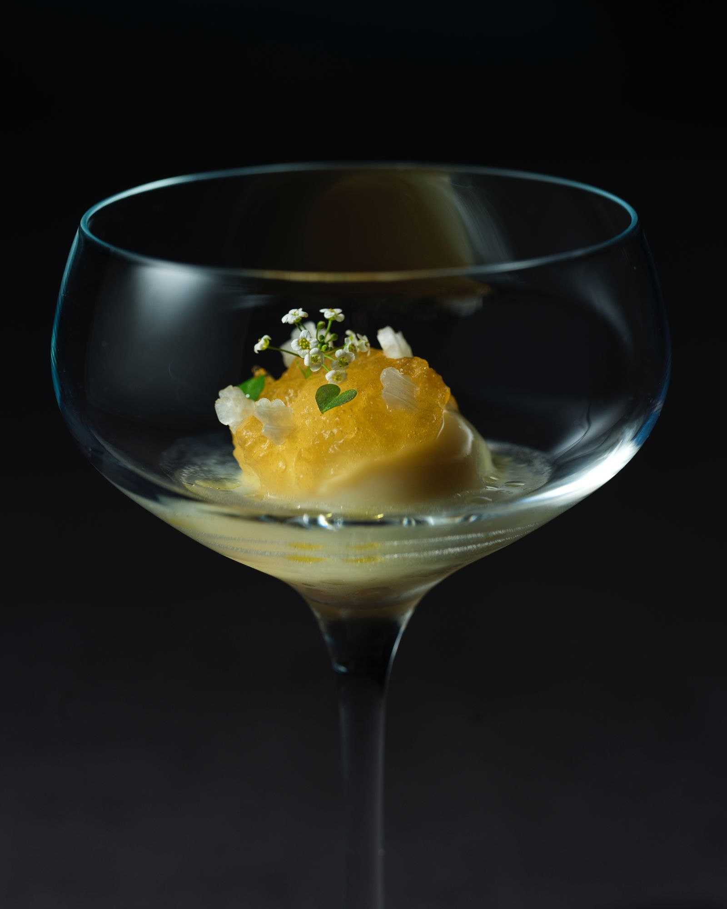
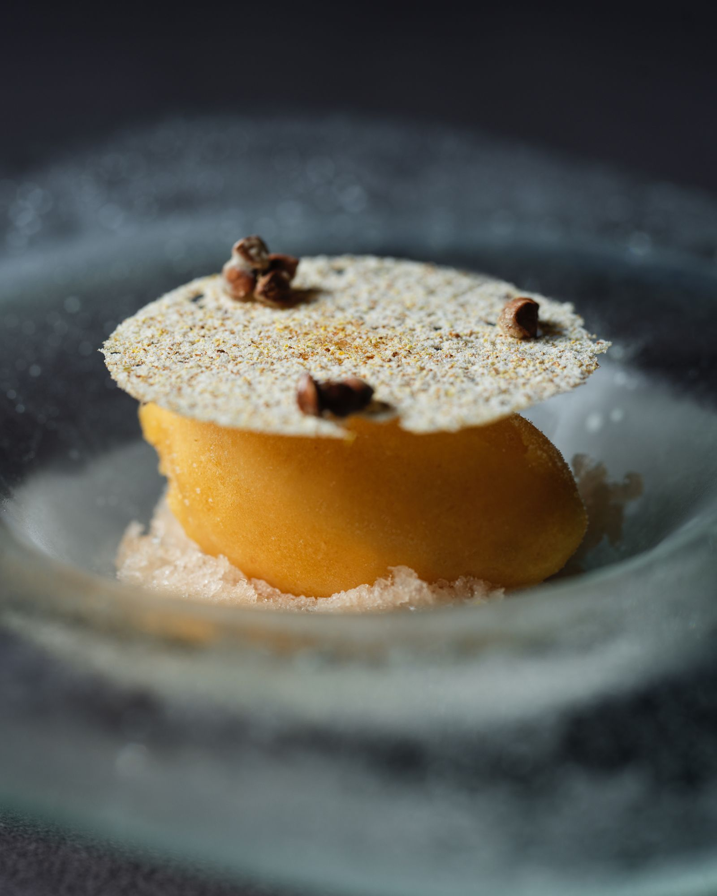
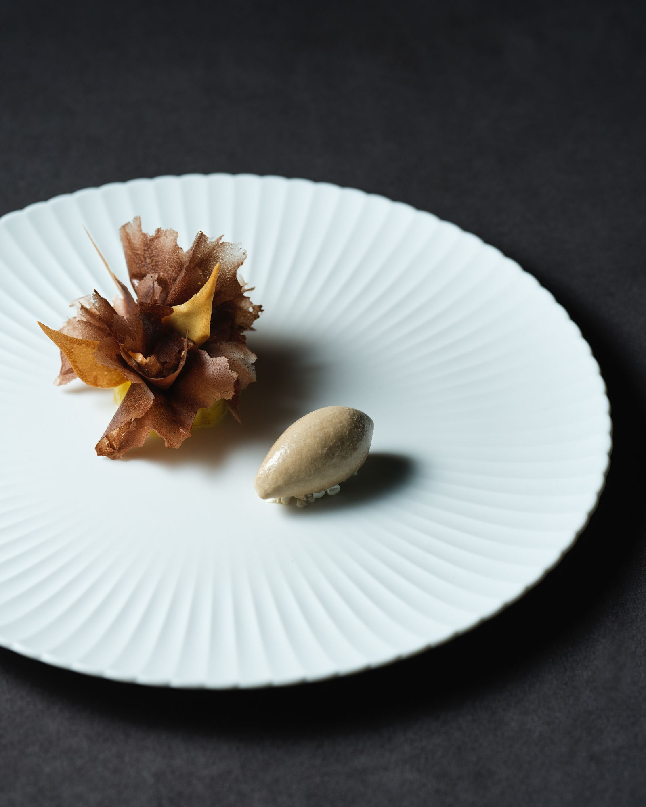

Cuisine
Cuisine
Some dishes stay, and become signatures. Some belong to a single season, and become a chapter.

Chapitre · Printemps–Été 2026
Field Notes of Flavour
This season, Chef Kei Koo works as a collector of flavour.
Three threads run through the menu: land and sea, plant spice, and time.
It opens with French white asparagus and ends with black garlic.
Land & sea
French white asparagus · kombu · abalone · deep-sea plankton
Plant spice
Maqaw · kaffir lime · Breton spice · horseradish
Time
Black garlic · buckwheat · osmanthus · ripened fruit

I
White asparagus / Miso / Poultry

II
Oyster / Plankton / Fennel

III
Foie gras / Abalone / Kombu

IV
Shima aji / Kaffir lime / Coriander

V
Geoduck / Caviar / Jalapeño

VI
Market fish / Breton spice / Zucchini

VII
Lamb saddle / Horseradish / Finger lime

VIII
Duck / Mango / Wild rice

IX
Apricot / Buckwheat / Osmanthus

X
Pineapple / Black garlic / Cocoa

XI
Mignardise
Signatures
Some dishes stay

I
Quail / Morel / Vin jaune
Quail from Xikou, Chiayi: the leg wrapped with foie gras and braised in vin jaune, the breast filled with morel and chicken-liver mousse. A Kei Koo classic.

II
King salmon / Passion fruit / Gooseberry
Glacial king salmon from Mount Cook, cured in citrus, with Taiwanese passion fruit and gooseberry juice and nasturtium oil.

III
Lamb / Harissa / Pepper leaf
New Zealand highland lamb rack with harissa, wrapped in native Taiwanese pepper leaf and seared.
Origins
Where it comes from
Daxi Harbour, Yilan · sweet shrimp
Xikou, Chiayi · quail
Kinmen · wild blackthroat seaperch
Pingtung · wax apple
Taiwan · pineapple, Irwin mango
Mount Cook, New Zealand · king salmon
Menu
Dinner · Tuesday — Saturday · 18:00 – 22:30 · last seating 19:30 · eight or ten courses
Lunch · Friday & Saturday · 11:30 – 15:00 · last seating 12:15
A sommelier’s pairing and a non-alcoholic pairing